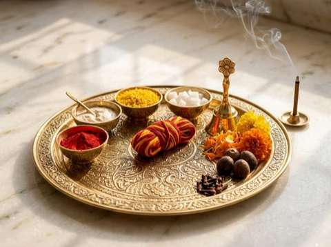

Puja Samagri List for Bangalore: Complete Hindu Ceremony Checklist

In Vedic tradition, every physical item offered during a ritual—from a grain of unbroken rice (Akshat) to a block of mango wood—carries a specific spiritual, symbolic, and elemental vibration. Offering pure, unadulterated samagri honours the divine deities, purifies the domestic atmosphere, and aligns the panchabhutas (earth, water, fire, air, and ether) within your living space.
For North Indian families living in Bangalore, sourcing authentic items with the correct specifications (such as unbleached natural camphor, chemical-free sindoor, and dried mango wood suitable for apartment balconies) can be challenging. Below is a comprehensive reference checklist designed by Pandit Shyam Sundar to help you prepare accurately for any sacred ritual.
The Universal Puja Kit: Essential Foundation for All Poojas
Regardless of whether you are holding a monthly Satyanarayan Katha, a home purification Hawan & Yagna, or an elaborate Griha Pravesh Puja, the following 16 items form the universal foundation (Shodashopachara dravya):
| Item Name (Hindi / Sanskrit) | Recommended Quantity | Vedic Significance & Usage |
|---|---|---|
| Akshat (साबुत चावल) | 250g – 500g | Unbroken raw white rice mixed with a pinch of turmeric. Symbolizes wholeness, prosperity, and fertility. |
| Gangajal (गंगाजल) | 1 – 2 Bottles (250ml) | Sacred water used for initial self-purification (Atma Shuddhi) and Kalash consecration. |
| Roli & Kumkum (रोली-कुमकुम) | 50g | Auspicious red powder derived from natural turmeric and lime for deity tilak and forehead blessing. |
| Haldi Powder & Ganth (हल्दी) | 100g powder + 5 whole sticks | Purifying antiseptic root representing divine grace, Mangalya, and Gauri invocation. |
| Chandan Paste / Powder (चंदन) | 50g | Cooling sandalwood paste offered during deity snan and tilak rituals. |
| Kalava / Mauli (मौली - रक्षा सूत्र) | 2 – 3 Rolls | Sacred spun red-and-yellow protective thread tied on the wrist and Kalash neck. |
| Janeu (यज्ञोपवीत) | 2 – 5 Pairs | Sacred three-stranded thread offered to Lord Ganesha, Vishnu, Shiva, and the Navagrahas. |
| Supari (पूजा सुपारी) | 11 – 21 Whole nuts | Firm, rounded areca nuts representing deities on rice piles during sthapana. |
| Paan Patta (पान के पत्ते) | 15 – 25 Fresh leaves | Fresh green betel leaves with intact stems used as seats for Supari deities and Tambulam. |
| Nariyal / Coconut (पानी वाला नारियल) | 2 – 3 Whole (with husk) | Water-bearing coconut placed on the Kalash to signify divine consciousness (Sriphala). |
| Kapoor / Camphor (भीमसेनी कपूर) | 50g | Pure Bhimsani camphor traditionally used for divine Aarti. |
| Dhoop Batti & Agarbatti | 1 Pack each | Natural cow-dung dhoop or floral incense sticks for pleasing aroma and air purification. |
| Pure Desi Cow Ghee (शुद्ध देसी घी) | 500g – 1 Kg | Pure clarified cow butter used for the continuous diya (Akhand Jyot) and Havan offerings. |
| Diya Wicks (गोल व लम्बी रुई बत्ती) | 1 Packet each | Cotton wicks for lighting brass or earthen lamps. |
| Red & Yellow Cloth (पूजा वस्त्र) | 1 Meter each | Clean cotton or silk cloths to cover the altar chawki (wooden stool). |
| Panchamrit Ingredients | Fresh milk, curd, honey, ghee, sugar/bura | Sacred 5-nectar mixture prepared fresh on the morning for deity abhishekam. |
Ceremony-Specific Samagri Additions
In addition to the baseline items above, individual ceremonies require specialized ritual dravyas:
1. Griha Pravesh & Vastu Shanti Additions
- Toran: Fresh string of mango or ashoka leaves for the main door frame.
- Navadhanya (नवधान्य): Nine sacred whole grains (wheat, barley, green gram, pigeon pea, black gram, white beans, sesame, horse gram, chickpea) for Navagraha mandala sthapana.
- Copper Kalash: 1 or 2 medium brass/copper pots.
- Milk Boiling Vessel: A new, unused stainless steel or brass pot with 1 litre fresh cow milk.
- Learn more in our detailed Griha Pravesh Puja Guide.
2. Satyanarayan Katha Additions
- Prasad Panjiri (पंजीरी): Wheat flour lightly roasted in pure ghee, blended with powdered sugar, roasted makhana, and chopped dry fruits.
- Tulsi Leaves (तुलसी दल): Fresh, clean holy basil leaves (indispensable for Lord Vishnu's bhog).
- Banana Plant Stems (केले के खंभे): Two small fresh stems or banana leaves to frame the four corners of the mandap.
- Seasonal Fruits: 5 distinct varieties (banana, apple, pear, pomegranate, orange).
3. Rudrabhishek & Shiva Puja Additions
- Belpatra (बेलपत्र): 21 to 108 unbroken, fresh three-leaf clusters of Bilva.
- Bhasma / Vibhuti: Pure sacred ash.
- Dhatura & Bhaang: Dhatura fruit and flower with clean bhaang leaves where available.
- Sugarcane Juice (इक्षु रस) & Rose Water: For extended Abhishekam streams.
- Shringi / Abhishekam Vessel: Brass cow-mouthed vessel for unhurried liquid pouring.
4. Havan (Homa) Ingredients
- Dry Mango Wood (आम की सूखी समिधा): 2 to 3 kg of chemical-free, dry wood logs.
- Havan Samagri Mixture: Blend of Ayurvedic herbs (Jatamansi, Nagarmotha, Kamal Gatta, Sugandh Bala, Agar, Tagar).
- Guggal & Loban: Pure resin pearls used traditionally in havan offerings for fragrance.
- Dry Coconut Spheres (गोला): 1 or 2 whole dry copra halves for Purnahuti.
Common Samagri Quality Pitfalls in Bangalore
When purchasing from commercial vendors or generic supermarket aisles, families often inadvertently buy substandard ritual supplies:
- Synthetic Camphor: Many cheap white camphor tablets are petrol-derived synthetics. Traditional rituals prescribe Bhimsani (Pachha Karpooram) crystal camphor.
- Adulterated Vanaspati Ghee: Blended vegetable oil sold as puja ghee goes against shastric tenets. Traditional rituals recommend 100% pure cow milk ghee.
- Broken Rice (Tukda Rice): Akshat literally translates to "unbroken." Offering fragmented, chipped rice is avoided in traditional Vedic Sankalpa.
Where to Source Pure Puja Samagri in Bangalore
If you prefer to assemble your list in person, several Bangalore localities maintain historic, trustworthy puja bhandars:
- Malleswaram: 8th Cross and Sampige Road offer numerous multi-generational pooja stores with fresh Belpatra, lotus flowers, and high-grade copper utensils.
- Gandhi Bazaar (Basavanagudi): Traditional market street renowned for fresh garlands, banana stems, and North Indian Ayurvedic dravyas.
- Commercial Street / Shivajinagar: Speciality stores carrying pure dry fruits, brass idols, and havan woods.
Puja Samagri requirements can be discussed during booking. Customers can also use our ceremony-specific Samagri checklist to prepare the required items, or explore our Bangalore Puja Samagri page for available kit arrangements and consultation.
Frequently Asked Questions
What should we do with leftover puja samagri and flowers?
Organic ritual remains (Nirmalya)—such as spent flowers, mango leaves, and havan ash (Bhasma)—should never be discarded in ordinary household trash. They can be deposited around the roots of trees, buried in garden soil as natural compost, or immersed in clean flowing water.
Can we substitute brass vessels if we do not have copper Kalash?
Yes. Pure brass (Pital) or silver vessels are entirely acceptable in Vedic rituals. However, iron, steel, aluminum, and plastic containers are strictly prohibited for Kalash Sthapana and deity Abhishekam.
How far in advance should we purchase fresh items like Paan and Flowers?
Dry samagri (dhoop, ghee, rice, spices, wood) can be procured 1 to 2 weeks ahead. Fresh perishable items (betel leaves, mango leaves, flowers, fresh milk, and seasonal fruits) should be purchased on the evening prior or the early morning of the ceremony to preserve freshness.
How can I confirm the Samagri required for my ceremony?
Puja Samagri requirements can be discussed during booking. Customers can also use our ceremony-specific Samagri checklist to prepare the required items.